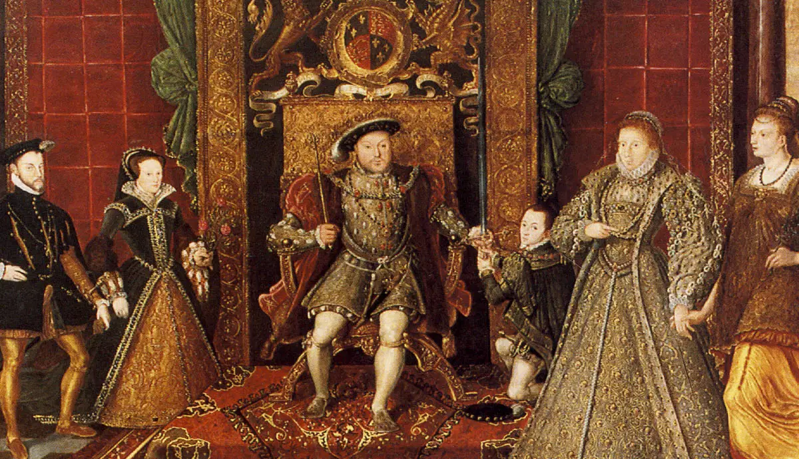

Dinastía Tudor
Casa nobiliaria de origen galés que reinó en Inglaterra de 1485 a 1603,
en virtud de su vinculación a la destronada Casa de Lancaster.
Aparecieron en la corte con Owen Tudor, amante de la reina madre Catalina
de Valois (viuda de Enrique V de Lancaster, rey de Inglaterra).
Durante la Guerra de las Dos Rosas (1455-85),Owen luchó de parte de la
Casa de Lancaster contra los pretendientes de la Casa de York y murió
ejecutado por los partidarios de esta última. Pero antes había casado a su primogénito
que era descendiente de Eduardo III Plantagenet con Margarita de Lancaster,

VII de Inglaterra
Enrique VII (1457-1509), el primer rey de la dinastía, nació de este matrimonio. Como heredero por vía materna de los derechos dinásticos de la Casa de Lancaster, encabezó a sus partidarios hasta derrotar y dar muerte a Ricardo III, último monarca de la Casa de York, en la batalla de Bosworth (1485). Enseguida se casó con la hija del difunto Eduardo IV (hermano y predecesor de Ricardo III), a fin de enlazar también con la Casa de York y facilitar la reconciliación.
Terminaba así la Guerra de las Dos Rosas con la instauración de esta nueva casa en el trono inglés. Le sucedió su hijo Enrique VIII (1509-47), impulsor de la ruptura con el Papado y de la reforma protestante que creó la Iglesia de Inglaterra. Estuvo casado seis veces; y, tal como ordenó él mismo, le sucedieron sus tres hijos, que fueron los tres últimos reyes de la dinastía.
El reinado del primero de ellos, Eduardo VI (1547-53), estuvo dominado sucesivamente por el duque de Somerset y el de Northumberland. Su decisión de dejar el trono a Jane Grey (una bisnieta de Enrique VII casada con un hijo de Northumberland) hizo que su hermanastra,María I (1553-58), tuviera que luchar para que se reconocieran sus derechos dinásticos. María Intentó la reconciliación con la Iglesia católica y el alineamiento con los Habsburgo, a través de su casamiento con Felipe II de España.
Le sucedió su hermanastra Isabel I (1558-1603), que organizó definitivamente la Iglesia reformada de Inglaterra como confesión oficial de la Monarquía. Tal como había previsto Enrique VIII en su testamento, la muerte sin descendientes de la tercera de sus hijas hizo pasar el trono inglés a los descendientes de su hermana Margarita (hija de Enrique VII); por el matrimonio de ésta recayó el trono en la familia de su esposo, los Estuardo.
